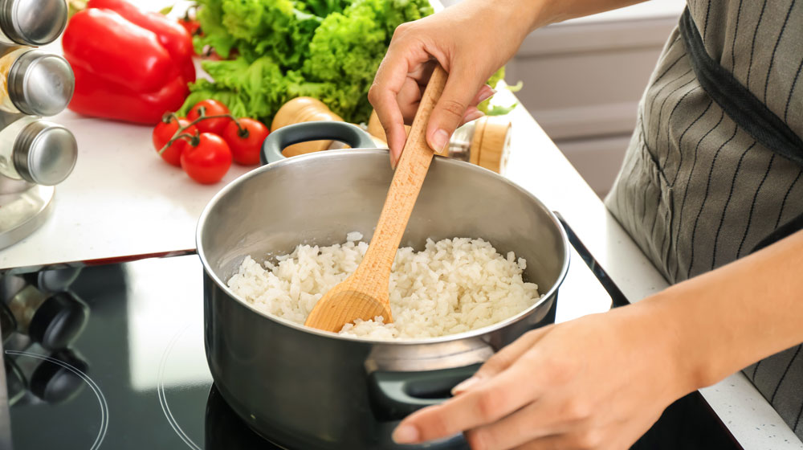
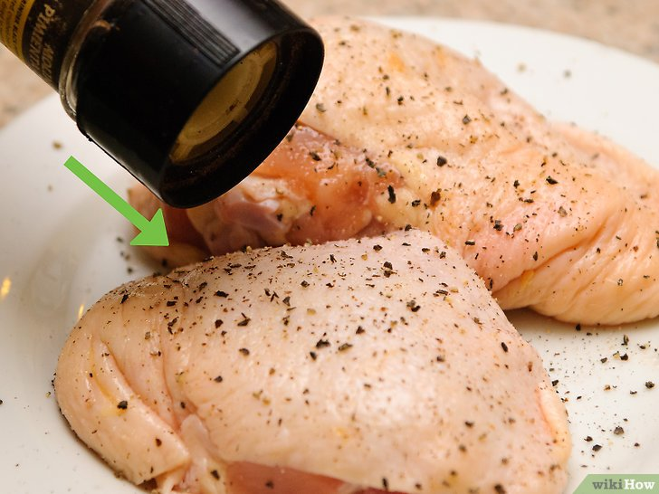
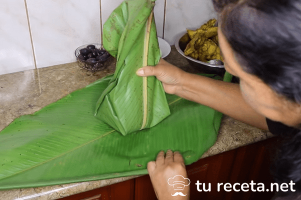

Sabor Criollo
Sabores peruanos que conquistan el corazón
Sabores peruanos que conquistan el corazón

El Juane es un plato emblemático de la Amazonía peruana, especialmente consumido durante la fiesta de San Juan. Preparado con arroz, pollo, aceitunas, huevos y un toque de especias, todo envuelto en hojas de bijao y hervido hasta tomar una forma característica. ¡Un auténtico tesoro selvático!




Aprende a preparar el tradicional Juane amazónico con esta receta en video.